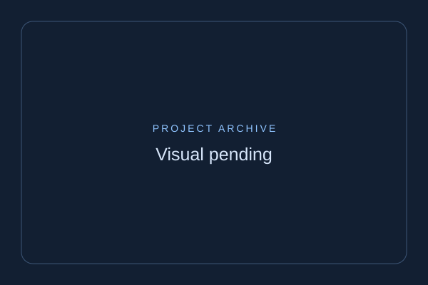

01. Self-Defense Flashlight Ad (2020)

Story: During the 2020 lockdown, a gadget brand sought a high-impact video for their tactical flashlight. I directed, edited, and even acted in the piece.
Creative Approach: I emphasized urgency and nighttime safety with dark tones, strobe effects, and fast-paced cuts.
Results: Over 200K views and a 3.2x return on ad spend via Facebook Ads in 14 days.
02. AI Fitness Coach Launch (2023)
The video for this archived case study has not been supplied.
Explore current verified work ↗Story: A tech startup needed a sleek launch video for their AI-powered personal trainer app.
Creative Approach: Motion graphics and kinetic typography were used to highlight app features and benefits.
Results: 25K downloads in 30 days, +120% engagement rate on Instagram Reels.
03. Indie Film Trailer Edit
The video for this archived case study has not been supplied.
Explore current verified work ↗Story: A director commissioned a suspenseful trailer cut for an indie drama premiering at a local festival.
Creative Approach: I focused on tension-building cuts, ambient sound, and slow-motion sequences.
Results: Trailer selected by Vimeo Staff Picks and boosted festival ticket sales by 18%.